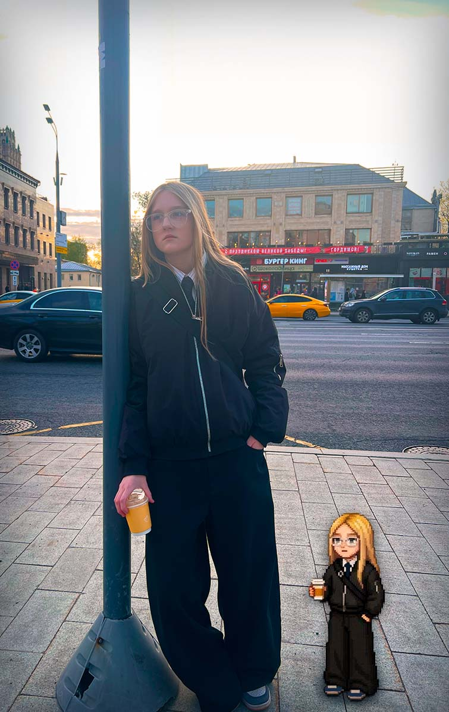

Продюсер YouTube каналов • Опыт с 2022 года
Продюсирую каналы, которые растут. От стратегии до команды — полный цикл производства контента.

С 2022 года занимаюсь продюсированием YouTube-каналов. До этого работала дизайнером, поэтому отлично понимаю, как должна выглядеть качественная упаковка канала.
Мои клиенты получают не просто монтаж или сценарий, а полноценную стратегию роста с гарантией результата.
Увеличиваю охваты и просмотры с помощью правильной упаковки и SEO.
Разрабатываю долгосрочную контент-стратегию под вашу аудиторию.
Оформление канала от шапки до превью — мой козырь (дизайнер с 2022).